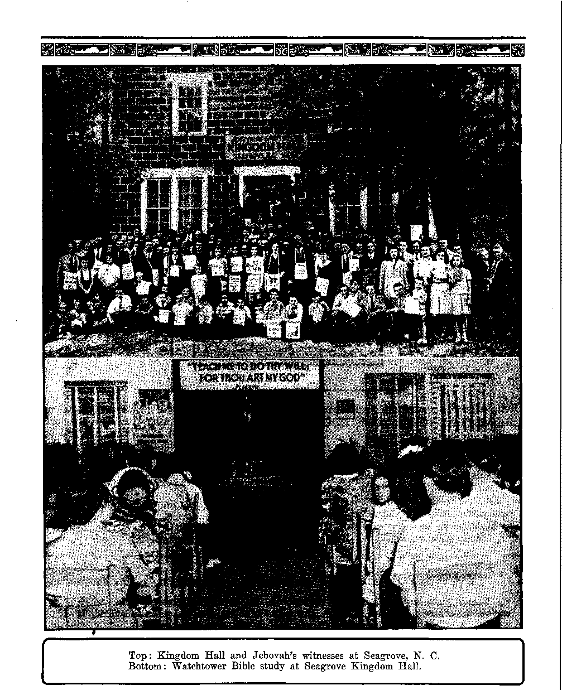

Contents
Bureaucrats Resent Rule of People
% Will the Beautiful Netherlands Be Destroyed? 10
The Paeelli-Hitler Concordat Works
The Devilish Work Already Begun
Presenting “This Gospel of the Kingdom”
Constantine Silvanus, Lover of the Bible
Some Things Constantine Believed '
Kingdom Hall and Watchtower Bible Study at Seagrove, N. C.
Published every other Wednesday by WATCHTOWER BIBLE AND TRACT SOCIETY, INC.
117 Adams St., Brooklyn 1, N. Y., U. S. A.
OFFICERS
President H. Knorr
Secretary W. E. Van Amburgh
Editor Clayton J. Woodworth
Five Cents a Copy a year in the United States $1,25 to Canada and all other countries
NOTICE TO SUBSCRIBERS
Remittances: For your own safety, remit by postal or express money order. When coin or currency is lost in the ordinary mails, there is no redress, Remittances from countries other than those named below may be made to the Brooklyn office, but only by international postal money order.
Receipt of a new or renewal subscription will be. acknowledged only when requested- Notice of Expiration is sent with the journal one month before subscription expires* Please renew promptly to avoid loss of copies. Send change of address direct to us rather than to the post office. Your request should reach us at least two weeks before the date of Issue with which It is to take effect. Send your old as well as the new address. Copies will not be forwarded by the poet, office to your new address unless extra postage is provided by you* Published also in Greek. Portuguese, Spanish, and Ukrainian,
OFFICES FOR OTHER COUNTRIES
England 34 Craven Terrace, London, W. 2
Australia 2 Homebush Rd., Strathfield, N. S. W. South Africa 623 Boston House. Cape Town
Mexico Calzada Melchor Ocampo 71. Mexico, D, F. Brazil Rua Llcfnio Cardoso 330, BJo de Janeiro
Argentina Calle Honduras 5646-48, Buenos Aires Entered as second-class matter at Brooklyn, N. Y*,
under the Act of March 3, 1879,
2
“As a Father, He €«nnot Side”
♦ The. pub lie is fed stories about the pope’s “tender heart” until' it becomes nauseating. In Newark, N. J., the ‘TJev-erend Father” Henry G. J. Beck safd of him: "
Were he to commit himself to one party, he would be guilty of dereliction of his duties toward the other. As a father, he cannot side against any of his children.
How is it that this ‘loving father’, who loves humanity so much, can stand on the side lines and see one of his bishop stooges murder eighty Masons in a single day and not show any sign of possessing what the loving apostle John described as “bowels of compassion”?
Zion Herald, an independent Methodist weekly, published in Boston, Mass., did something that should help the pope when it remarked some time back that during “the late war in Spain” the Roman Catholic Church carried on propaganda throughout the United States against the legally constituted democratic Spanish government, propaganda in which gross misstatements were made and consistently broadcast by such official representatives of the hierarchy as Father Joseph Thoming, falsely asserting that the Republican government of Spain was “communist”, and that thousands of churches had been burned by the Loyalists and thousands of Roman priests slaughtered.
Everyone who knows the facts admits now that bur own government’s failure to lift the embargo against Spain was due to political fear of the Roman Catholic Church, and to the personal intervention of the then Cardinal Pacelli, who came to the United States for the express purpose of convincing the President that an embargo should be imposed upon Spain—this embargo which then finally led to the destruction of the Republic of Spain. It was a clear case where a politically led religious 'minority terrorized the American, majority into the adoption of a foreign policy that wFas detrimental to the best interests of the United States.
consolation
“And in His name shall the nations hope.”—Matthew 12:21, A.S.V.
Volume XXVI Brooklyn, N. ¥., Wednesday, March 14, 1945 Number 665
Man’s Best Government
STUDENTS of human government agree with Horace Bushnell, Hartford’s most farsighted and progressive citizen, that the government of the Papal States, under the pope, constituted the world’s worst government. And they also agree with the Chicago Tribune:
We do not say that the United States is today or at any time was the approximation of the Kingdom of God. All we say is that our form of government provides the nearest approach to it that mankind has seen. Here men hold, their heads higher; here they are more prosperous and more generous; here they are freer than anywhere else in the world to make the most of themselves. That is why peoples from all over the world have flocked here by millions and why few of them have chosen to return to the lands of their birth.
Arthur Penn, a California contributor, has a more detailed view of why the millions came and stayed. It is interesting. Let him tell it:
It is nice to think that the needy. and oppressed of Europe were clamoring to come to the new world in the late 1800’s, and that these gates were generously thrown open to let the eager millions in. It did not happen that way. Actually the great tide of immigration was largely the result of a high-pressure sales campaign. The steamship companies wanted the emigrants’ passage money; the builders and manufacturers wanted their strong backs. But, above all,' the railroads wanted to dispose of the huge quantities of land along their rights of way. But the railroad’s pamphlet, ctHow to Make a Living on a Farm in Kansas,” was not as attractive as the railroads hoped it would be. They had to find a better piece of sales promotion than that, and they did! They translated the Constitution of the United States and spread it far and wide. They were selling land; but freedom and the inspired words of the founding fathers were part of the sales talk.
It is true that the immigrants were attracted to some extent, by the promised opportunity of making a greater material living, but they were attracted to a far greater extent by the hope of living the better life which the United States Constitution seemed to promise them. They had at that time no means of knowing that the Constitution did not mean what it said, but only what the judges of the United States Supreme Court said. For judges are the ones who administer justice, and they are not eligible to become judges until they have practiced law for a certain number of years— and lawyers practice law for a living! Only the rich can employ lawyers steadily enough to enable them to make a living, so wealthy people are their clients and employers. And by the time lawyers become judges they have got the habit of working for the rich! So the poor man’s rights can be considered nearly nil. And he may as well understand that what he is fighting for is for the privilege of making it safe for the rich to run this country in the same manner it has been run for the last two generations. Unity appears to mean agreeing with the ones who are running the country, for those who disagree with them are called defeatists and saboteurs. But are not the real defeatists those authorities who ignore the law because they believe that their own judgment is better, and who conduct the affairs of the country in such a manner that foreign peoples are so disgusted as to make it seem possible that there may be other enemies to defeat even after Germany and Japan are beaten? And however strong a nation may be, no resources will last forever when used at the rate demanded by modern war. -
But the fact that people do not obey their own laws is not a sign of strength, but of 'Weakness. It may be that such people can fight 4s well, but they are comparatively weaker, v for they have more to fight. For how can such people be trusted? For these past 70 years _ constitutional law has been ignored. All three branches of the government have acted as though there was no such thing as a written Constitution that was the supreme law of the land. And the judges of the United States Supreme Court have acted and still act as though the Constitution created a court so that the court could destroy it. Is it not obvious that the Constitution created a court in the expectation that it would be enabled to function efficiently through that court? It seems to me that the United States Supreme Court was created as a guardian of the Constitution, and not as an interpreter thereof.
The Constitution is written in the simplest kind of language, and so it seems obvious to me that the founding fathers made a sincere effort to write something that could be understood by anyone capable of reading it. With what seemed like divine inspiration George Washington warned in his Farewell Address:
“If in the opinion of the people the distribution or modification of constitutional powers be in any particular wrong, let it be corrected by an amendment in the way which the Constitution designates. But let there be no change by usurpation, for though this in one instance may be the instrument of good, it is the customary weapon by which free governments are destroyed. The precedent must always overbalance in permanent evil any partial Or transient benefit which the use can at any time yield.”
. But as a whole the founding fathers did not believe that the time would soon come when the population would look upon the country merely as a place in which to make a living, and not as a nation dedicated to a better way of life; that people would place their own interests above the interests of the nation; and lawyers, believing that the United States Constitution may interfere1 with their efforts to make a profit from the law, created a court procedure that strangles the Constitution. But the lawyers could not have done this if the people had not been complacent.
I understand that before an alien can become a citizen of this country he must swear that he has read the United States Constitution; that he understands it; that he is willing to obey and uphold it. But how many citizens uphold the Constitution or even attempt to uphold it? flow many are acquainted with jurisprudence or the manner in which arrested persons are defrauded of their legal rights? And this is not considered any crime; it is not considered malfeasance or dereliction of duty on the part of anyone. When made acquainted with these conditions the stock answer of the ministers of the gospel is: “To err is human, to forgive divine; we must forgive those who sin against us.” Why do not these ministers of the gospel go before Congress and tell the lawmakers that they should forgive sin and so should rescind all punishment for breaking the law?
But docs anyone have the right to forgive sin before a sinner has done judgment? Does it not make one an accessory of the other, and both equally guilty? Is being in a position of authority so important that they no longer need to obey the law? My understanding of the law does not make me believe that the authorities were elected to do as they please. Neither do I believe that there can be any real republican form of government where the duties and responsibilities of citizenship are ignored. [Quotation ends]
Congress Comes First
_ The American system of government is that Congress makes the laws; the president executes them; and the Supreme Court decides if he executed them in accordance with the Constitution; so Congress is the proper place to start a little study of American government. Congress is the American people in action as a lawmaking body. Congress may make laws, "but they are null and void if unconstitutional. The Roman Catholic Hierarchy is always trying to get laws passed that arc against freedom of speech; the reason for that is that it does not want publicity of its shameless attacks on liberty. In many states it has tried to get state laws to the effect that—
The publisher of any false or malicious statement intended to promote hatred of any group of er sons shall be guilty of libel and subject to fine and imprisonment.
If such laws could be passed, Roman Catholics could go out and arrest any Protestant that dared open his mouth, take him before a Roman Catholic judge, get him fined, and march him off to a prison which had a Roman Catholic warden, and the Dark Ages would be on • again.
Rhode Island passed one of tjiese Roman Catholic Hierarchy-inspired bills, to try to cut off public information about its crooked, cruel and tyrannical practices. One would think that in an enlightened commonwealth like Rhode Island the legislators would have known better than to try a thing like that But politicians are slow to learn, and plenty of them are foolish enough to think that they can pass .laws, and get them enforced, whether they are constitutional or not. Little do they know the spirit of the true American people. It is one thing to deprive an illiterate people of their rights, but quite another and different thing to bully an honcst-to-goodness American into doing the will of the politicians whose work centers at Vatican City.
So, despite the fact that the Hierarchy wants silence about its teachings and history, the truth keeps coming out, more and more. America isn't Catholic; not yet. Of the 96 members of the senate only 7 are Roman Catholics; and of the 434 representatives only 58 are Roman Catholics. In joint session, out of 530 senators and representatives there are but 65 Roman Catholics, or 12.3 percent.
This is about right, as about 15 percent of the population of the country are of that sect. Don’t believe all the fairy stories and the free advertising so continually and nauseatingly spread before you.
Congress Is Liberal
It is of the nature of public congresses to be liberal; and though the American Congress is afraid to do anything constructive for the 10,000,000 that are prevented from voting because they are poor or black or not socially desirable, yet it is to its credit that with 934,100 German, Italian and Japanese citizens in the land, it caused but a few thousands to land behind barbed wire as dangerous to American safety. Congress believes in democracy.
To be sure, there are differences of opinion. Why not? Senator Reynolds, of North Carolina, became infected with Russophobia some years ago, and even yet he is afraid, though everybody knows that but for the Russians Britain would have been wiped out and Hitler would have won the war long ago. Senator Reynolds once said:
England, our closest ally, has led us in condoning the Russian world plan for the sake of temporary expediency. We see nothing of determination being done to check any of Russia’s very obvious purposes, and our’ abhorrence of such purposes was the thing that brought us into position where we had to accept war from Japan and Germany.
And England has just given another striking example of the state of affairs in the Allied camp by announcing that after Germany is beaten, England’s great conscript army of the present will be demobilized, and volunteers alone will be available to help the United States fight Japan. Thus stands the United States, pouring out her treasury to the bottom, rapidly running up a national debt of 500 billion dollars, pumping dry her oil wells, stripping her forests, preparing to supply the bulk of the soldier-power for the European invasion, making ready to feed and finance the whole world.
Martin Dies, much-advertised former member of the House of Representatives, will not be there again. His so-called “investigations of fifth columnists” were as complete a waste of money as were ''the salaries which he caused Uncle Sam to pay to his family. He was small enough and mean enough to drop the names of 1,121 federal employees in the . lap of the Federal Bureau of Investigation. That hard-working and capable bureau had to look these people up and run them down, and when they had finished the job there were but two who had to be dismissed from their government jobs.
Close to the People
• Congress is close to the people, and the American people seem now to- be convinced that they must back up the Moscow four-power declaration for an international organization to keep the world at peace. In the senate the vote was 85 to 5, with the above-named Senator Reynolds and four others voting against the new league of nations. In the House of Representatives the vote was 441 to 34. It remains to be seen whether Reynolds was right or wrong. He seems not to be afraid to talk out in meeting. And he has ideas which he may express.
Two little things that make the common people appreciate congressmen. One is about Congressman John E. Sheridan, of Pennsylvania. He gave up his time as a lawyer and a public official to defend a man charged with salvaging 10 potatoes which had been thrown out of a ship’s galley. The1 charge was patently to discourage the man from making application for citizenship. It failed, and the judge on the bench complimented Sheridan for the free service he had rendered, saying that it was something for the country to be proud of. And, moreover, the man defended made application for citizenship the satne day.
The other little thing was an effort by Senator Andrews, of Florida, to restrain attendance of children at movies which, as he put it, are “rootin’ shootin’ cowboy movies”. His proposed law is to empower Federal agencies having access to social security funds to detain such children and return them to their parents. A good work, surely.
Protect the Public
Congress appropriates the money for everything, and occasionally checks up to see what the people are getting for their money; and the results sometimes would make one’s hair curl. Thus the Truman committee made exposures of the Curtiss-Wright Aviation Company which shocked the nation. The company was -accused of palming off defective engines by an elaborate system of fake tests. Its first 65 planes cost the government $1,277,000 each; this was $1,210,-201 more per plane than had been anticipated. It was also accused' of Spending fabulous sums for newspaper advertising, to protect its reputation, and charging all that advertising expense to the government, At the moment, one does not recall reading about any girl that was crooked going down the street with a sign on her back, “Do not believe the stories you have heard about me," and then using her influence with government officials to get back the money she spent in advertising. Should such a thing take place, the local newspapers would probably jump on both the girl and her boy friends, not because they were all crooked together, but because they chose a form of advertising of which Big Business- does not approve.
Another expensive place to build planes would seem to be the Fairchild Aircraft plant, Burlington, N. C. In a little over two years Riis concern had spent $13,000,000 and had produced one plane. The concern had plenty of plant
guards getting $225 to $325 monthly; it had sold unused material to Burlington junk shops; it had leased experts from St. Louis at $48 a day; it had expended $91,206 for stationery and office supplies and $52,365 for travel expenses; so witnesses testified- before a special House military affairs subcommittee.
Bureaucrats Resent Rule of People
Grafters resent rule by the people; and so do bureaucrats. America expects the administrative departments to use their powers in administration, not in tapping wires and in seeking to prevent the publication of facts. Drew Pearson, accused by the president’s office of being a chronic liar and spreading diabolical lies, retaliated by. listing six statements put out by that office which were also in reverse of truth. America believes in freedom of speech and in telling the truth without fear or favor.
Congressmen have noted that in some instances where they have created bureaus to render certain services, as soon as those bureaus had been filled with politicians, the latter seemed to think that Congress (the people, the taxpayers) had no business to summon them for information as to their activities or anything else. George Morris, veteran Washington correspondent, put it this way:
With a few exceptions there is no bureaucrat in Washington who was ever elected to office, or who was not repudiated by the electorate. Under such a system you cannot have representative government, because those who direct your affairs do not represent any one or anything except an inordinate craving for dictatorial power.
But the real trouble starts when the bureaucrats, asked by Congress to do something, and paid liberally for doing it, start in to.make laws. From March 14, 1936, to October 7, 1939, only three and one-half years, 115 agencies of the federal government issued 14,889 rules, regulations and administrative decisions which have the effect of laws. An early collection of these made 17 volumes averaging 1,100 pages each, or a total of some 19,000 pages. That was only down to June 1, 1938, and the new system of government by edict instead of by law had only gotten well under way. By now it may be several times as large. This is exclusive, of course, of the United States Statutes at Large. So to speak, “It is the law written by downtown Washington after Congress goes home.” Concerning that peculiar form of government Senator Joseph C. O’Mahoney, of Wyoming, after saying that “it is the characteristic mark of totalitarianism”, says also:
It is the road to national socialism where such arbitrary, concentrated power becomes the master of the people.
The Army of Federal Employees
Of course, if you are going to have 19,000 pages of new law's in 264 months (outside of what Congress enacts), then you have to have somebody to do the writing. And you have them all right. Thus, in Jefferson’s day there was one federal employee to every 5,308 persons. But that was in the horse and buggy days. Now there is one civilian government employee to every 45 persons; and unless they told you about it, how would you know that you now have a government that is 117 times as good as that of Jefferson’s time? In World War I the government had 917,760 civilian employees; but in April, 1943, it was already past the 3,000,000 mark and still climbing. Stating it otherwise, in World War I there was one civilian government pay-roller for every five men in uniform, but in this war there is one for every two and a half. .
Britain has operated a price and rationing agency successfully for several years. It used ten lawyers on the job. But the United States w’anted the work ’ ’ 7
done 270 times as well (maybe), so they put 2,700 lawyers on the job; and if you know anything about the Office of Price Administration, you know what a great success it is. Its regulations fill five fat volumes and take 11,000,000 words. The British can't show anything like that. Going into this matter of ■words the St. tLouis Globe-Democrat explains that in x Genesis the story of the creation of the world is told in 400 words; the Ten , Commandments account for 267 words, and the OPA just mentioned uses 2,500 words to announce a reduction in the price of cabbage seed. Those 2,700 lawyers have to have something to do, don’t they?
Also, and this is odd, they want to stay on the pay roll, and, in order to do so, have organized and conducted kangaroo courts all over the country. A victim appealed to the federal court at Dallas, Texas, for relief and got it. The well and favorably known Judge W. H. Atwell, in rendering the decision, made this statement about this 2,700-lawyer-kangaroo-court crowd:
The [OPA] hearing administrator, unknown to and unprovided for by congress, presumes to conduct a court. He acts without fear of consequences for malfeasance or misfeasance. If. he can suspend for two weeks, he can suspend for two years. He is not only unknown to the congress but he is unknown to the Constitution. What the hearing administrator does is beyond the reach of executive forgiveness. He himself is beyond reach of any constitutional removing power. He is a modern instance of pure dictatorship.
The people of San Francisco do not seem (o think anything more of this 2,700-lawyer-kangaroo-court crowd than did Judge Atwell in Dallas. At least, one may draw that inference from a three-column story in the San Francisco Examiner which, under the cheerful headlines “Hitler-Type OPA Court Set tip Here; Powers Absolute; Bureau
Picks Own Judge to Enforce Orders”, set forth the following:
In Hitler-like disregard of the already established courts of the land, the Office of Price Administration (OPA) has established in San Francisco, as elsewhere throughout the nation, another system of courts of its very own, courts so all-powerful that they could summarily put firms out of business, close up an industry’s doors, take away an individual’s ration cards and right, and, technically, actually deny an American citizen the right to food!
Heading this trick new court here in San Francisco is Everett C. McKeage, former superior court judge. And his powers are such that even McKeage himself says, in so many words:
“No courts in American history ever had such power as this!”
In McKeagc’s court the right of trial by jury is denied. When all foods come under rationing, he could sentence any man, woman or child to death by starvation. McKeage is a New Deal political ‘dame duck”, twice appointed a judge in San Francisco by former Governor Olson and twice defeated when he came up for election. Thus the man whom San Franciscans wouldn’t have as either a municipal or a superior court judge becomes more powerful than any supreme court judge.
Other Important Bureaus
No one working for the something like 150 other bureaus should get jealous because the OPA chances to have so much attention in this story. Senator Byrd, of Virginia, explains:
What we now have in the United States is not our former government grown bigger. What we have is a different kind of government. It is ceasing to be government of three co-equal parts, Legislative, Executive, Judicial. Because the Executive branch has grown so vast and exercises so many powers, real and assumed, we are coming more and more to be ruled by Executive and bureaucratic directives.
It is well known that there need have been no sugar rationing since July, 1943, except for government interference with production in Cuba and in the United States. It is well known that there need have been no meat shortage in 1943 but for similar mismanagement. The shortage began when the government started to establish quotas and ceiling prices; it began that very day, though there was actually a surplus of 15,000,000 head of cattle in the country.
For some inscrutable reason, the proper bureau to do such a fool thing sent to Nome, Alaska (which has 400 citizens in the winter), 350 tons of butter, 175 tons of coffee, 78 tons of salad oil, 58 tons of soap, and 78 tons of toilet tissue paper. Suppose, now, you were one of the 100 homeowners or homekeepers in Nome. Wouldn’t it make you love a government that loved you enough to send you in the fall a ton of butter to see you through the winter, and, say, half a ton of coffee, and other things to match? The same bright minds sent 150 cases of canned salmon to Nulayo, Alaska, the sole industry of which town is the catching and canning of salmon. The politicians who sent this constitute what is called the “Civilian Reserve Food Supply office”; they have just enough sense to feed themselves (at public expense) and to cross the road (by automobile, at public expense). They should set up a court, kangaroo style, and call this statement contempt of court, which it is.
Waste Paper Excitement
■ The most interesting thing about a politician who never did a useful thing in his life is the effort he will make to keep the gravy boat at his plate as long as he breathes. This may be deduced from the following tale from the Fort Worth Press:
The Press sold 500 pounds of waste paper the other day. This was not unusual, for spoiled and out-of-date newspapers pile up.
Such paper usually is sold to a salvage company which comes and gets it and pays for it. But this-500 pounds was sold to an electrical company which has a subcontract on a government project in Fort Worth. We don’t know what an electric company wanted with waste newspapers, but they did want them and paid $1.75 for the 500 pounds. But the Press learned that selling to a government contractor isn’t as simple as selling to an ordinary junk man. First came five copies of a request for bids. Then came three copies of a printing form confirming the purchase order. Next came the bill, and there had to be nine copies of that. There was a telephone conversation about the deal too, and the mail brought a form verifying that matter. One of the documents in this transaction, appropriately enough, was a mimeographed sheet of instructions, telling how to make out the forms and to whom they should be sent. It furnished a good 15 minutes of reading for the office - manager, who fortunately is a patient man. All added up, there were 19 pieces of paper to be read, filled out and mailed, all to sell 500 pounds of waste paper for $1.75. If it takes that much wasted paper to transfer a little waste paper, how mueh detail is involved in buying materials for a bomber? '
Don’t get too much excited about that waste paper deal. It might lead you to get all stirred up because a dozen officers in the war department were told to scrap 332 obsolete machine tools at Detroit, and, while they were at it, they scrapped 445,998 more. The net result of this high intelligence was that $1,721,136 worth of machine tools were sold as scrap for $36,924. The government managed to get 95 percent of these tools back, but the point is that a reasonably bright boy ten years of age would have known better than to do such a fool thing in the first place.
Every day brings fresh evidence of the need of Jehovah’s promised Kingdom. Only under its blessed reign will men of good-will find rest and security.
FORGETTING for the moment the _ 72,000,000 dark-skinned Mohammedans who constitute the population of ■ Netherlands East Indies, and consider-'ing only the 8,728,569 Europeans that |ive in the Netherlands proper, there is r here, astride the many. mouths of the
Rhine, one of the most beautiful and most interesting countries on the planet. The area (12,862 square miles) is that of New . Jersey and Connecticut combined. Onefourth of it is below sea level, protected from inundation by 1,500 miles of dykes. Not only is it one of earth’s garden spots, but its village of Boskoop, with 600 nurseries, is admittedly the largest center in the world for (lowers and ornamental plants. ,
New York is interested in the Netherlands. Why? Because the Nether landers were its first settlers. It was they that drove the bargain with the Indians, of $24 and a barrel of firewater for what is now Manhattan island, the center of New York city. If New York has an aristocracy today it is the descendants of those settlers- who followed in the path of Hendrick Hudson. Ever hear of the Roosevelts and the Vanderbilts? The Netherlands is the Venice of the world.
The pictures of the newer homes of the Netherlanders, published in the London and New York papers, are all that one could expect of a land so famous for its flowers and so famous for its artists, and so neat and clean that the housewives make a regular practice of putting curtains to the windows of the cattle barns.
They have a saying that good housing makes good people. Flats may not be built more than four stories'high, and each flat has its own private staircase and outside door. There are or were different kinds of dwellings for old people, for single women, for large families, for artists, and even for undesirables. Most houses are built so that there is a little garden attached. In a fishing village the houses have a charming ark shape. There is plenty of brilliant blue and yellow paint Washings are hung in the balconies so that they can be seen only sideways. Special provision is made for homes for the very old, so as to keep them out in the sun as much as possible. The building material is of brick, of every color, glazed and unglazed, set vertically, horizontally, or at an angle. A visitor there said:
Having laid out a new zone of expansion, the Netherlanders bring in bargeloads of yellow sand to raise the ground ten to fifteen feet over the whole zone. Then they sink forty-foot piles down through the sand, the sea shells and the herring bones to get a foundation deep down in the blue elay. The result is that when a new suburb has been finished, you can stand at the back windows of the outermost houses and look out on a Rembrandt landscape of cows and clouds and busy windmills far off on the horizon. It is all done with a foot rule, as everything is done in the Netherlands. It is pretty expensive, but it produces the best-planned suburbs in the world.
The Netherlanders Go Places
Don’t think, because the Netherlanders wear wooden shoes when they go after the cows in the damp pastures, that they don’t go places. In 1933 there were 35 bicycles to every 100 men, women and children in the country (a world record in bicycle ownership). And 99 percent of them were made in the Netherlands.
As late as 1939 there were hundreds of pensions and small hotels in the Netherlands where bicyclists (and there were thousands of such tourists) could get a clean, comfortable night’s lodging and a breakfast of bread, cheese, jelly, dried beef, egg and gingerbread for a dollar in American money. Special paths for cyclists run parallel with even the
largest motor highways. In those days a good secondhand bicycle could be had in any city for $12 and sold at $5 to $7.
But the Netherlander take to, watercraft, as well as to bicycles. In times of peace the papers contained a picture of “Schipper Hein Sehilperoort”, who sailed 40 miles in a barrel through a North Sea storm. The barrel traveled on its side, and was equipped with oars and a sail.
As one of the greatest maritime nations, the Nethefland ships are, of course, seen in every sea; but especially are they noticeable in the traffic between the homeland and the Netherland East Indies. When the Japanese seized those great islands (Java, by the way, is the most thickly settldd land in the world) the great merchant fleets of the Netherlands were rented to the United States and Great Britain for the duration of the war.
Queen Wilhelmina
Queen Wilhelmina’s mother was a German princess only 20 years of age when she married King William III, who was then over sixty. As a wife and mother she had tact, understanding, dignity, and kindness of heart. Queen Emma lived a quiet life, and, from the time Wilhelmina was 18 years of age, never interfered in politics in apy manner.
Wilhelmina had been queen three years when she married as her prince consort the German prince Henry of Mecklenburg-Schwerin. At the time of his death, eleven years ago, a wireless to the New York Times said:
Prince Henry’s position when his marriage was arranged by the interested nations of Europe in 1901 was particularly difficult in the Netherlands because he was the fourth and youngest son of the Duke of Mecklenburg-Schwerin, an independent State which had joined the German Empire in 1871. The Dutch people knew that Germany needed and coveted their ports and they feared the marriage would serve to draw them more under German influence.
At the age of 25, when it was officially announced through the Foreign Office of the Netherlands that “a marriage has been ’arranged”, the prince, who was then a duke, was a soldierly looking young man, fond of hunting and mountain climbing. He was naturalized as a Dutch citizen a month before the marriage, and the title Prince of the Netherlands was created for him. He began to grow a spade-shaped beard in the Dutch fashion.
His sole function in connection with the State was to provide the Kingdom of the Netherlands .with an heir—-preferably a son.
Henry handled himself well, kept out of the limelight, kept out of politics, and, at the time of his death, “had grown stout and looked entirely like a Dutchman.” Wilhelmina had no reason to be ashamed of him.
She Has Reigned 55 Years *
Queen Wilhelmina has reigned since she was 10 years of age. She is now nearing 65 and has had a much longer reign than any other sovereign on a throne today. Indeed, it is -one of the longest in history. She is a real ruler, understands all subjects connected with the Netherlands as well as her ministers, and it is admitted that most of them stand in awe of her anfl realize that “it is not always wise to differ with her”. Reporters say of her (and she looks the part):
She is serious both in her talk and in her work, but she is also master of the royal art of being extremely pleasant. She is very religious and very strait-laced. She tolerates no frivolities. She takes a minimum of interest in food, dress and social life.
While still in her homeland, she was admitted to be the hardest-working crowned head of Europe. She shrinks from publicity and public functions, but attends strictly to every duty. She is intolerant of short skirts, rouge and lipstick, is strong-minded and self-willed, and cannot be bluffed. Most persons hesitate to oppose her, and it is said that “the only thing that impresses her is knowledge”. Her diversions are gardening, horseback riding, and watercolor painting. She is described as “austere” and “capable”..
MARCH 14, 1445
11
1' In 1942, when - she had to shift her court to London, Wilhelmina came over to the United States and while here addressed the United States Congress. She mentioned her some 76 million subjects, the Netherlands’ great maritime - strength, the Netheriand peoples’ love of liberty, their increasing self-govern-,ment, and their desire to leave others alone and to have others do the same with them. There are 60 various languages spoken in Wilhelmina’s realm.
And Then There Is Juliana
The princess Juliana came into the t world April 30, 1909. She is the heir-apparent, and very active. Like her ‘mother she had to have a marriage “arranged” for her; also to a German. Juliana drew Prince Bernhard zu Lippe-Biesterf eld. As aforesaid:
His sole function in connection with the State was to provide the Kingdom of the Netherlands with an heir—preferably a son. The couple have three beautiful little girls that came along two years apart, one of them in Canada actually, but technically in the Netherlands. When the first one, Beatrix Wilhelmina Armgard, showed up on January 3.1, 1938, her papa (the next evening) took her in on a cream silk pillow to show her to the Netherlands premier, Dr. Hendrick Colijn. If you are a papa, you like to show off your little girl, especially if she is supposed to be the prospective future queen of the thousand-year-old House of Orange. Bernhard acquired an income of 200,000 guilders ($80,000) annually by becoming Juliana’s prince consort.
When Juliana and Bernhard were married they publicly agreed to be “faithful and true in all things as taught by Holy Scripture”. At the conclusion of the ceremony each was presented with a large Bible. The wedding prayer said that “difficult days” were at hand, and the prayer didn’t miss it much.
Juliana is a good wife and mother. She takes complete care of her babies and does her own marketing. When in New York, in 1943, she enjoyed walking unattended in the streets, studying the faces of the people and windowshopping. She speaks Hollandish, French, Spanish, English, and German, and has a college degree from Leyden University. Like her mother she has little patience with the glamour of royalty but takes pomp and ceremony as a duty.
Advent of the Paper-Hanger
Without reason and without excuse the Jesuit-trained Hitler sent his bombers over the Netherlands, May 10, 1940, shattering a peace that had been unbroken for a hundred years. In five days one-fourth of the Netherlands army had been killed and the Allies considered further resistance fruitless. The invasion by the Nazis was without warning and without any attempt at negotiation. When the German parachutists came flying down into the country they adopted all kinds of disguises, including Netherlands national uniforms. The motorized units also entered the country in disguise.
One-fifth of the people of the Netherlands made their living on the land, on small holdings. From these holdings came the famous cheese, butter, tulips, cereals and other crops which rewarded industry on a fertile soil. Another fifth lived by commerce; from all the world came raw materials. Another two-fifths lived by making things. Ships were built, textiles woven, coal mined, tin smelted, diamonds cut. The people were busy, prosperous and contented, until the Jesuits started out on their plan to grab the world. And besides all that the
Netherlanders are Protestants, and Hitler is what is called a "practical Catholic”, i.e., a religious gangster, an adept at murder.
Rotterdam was demolished by bombing squadrons which Hew over the city with wing tips almost touching. In an area of six to eight 'square miles not a house remained standing. Of the population of 509,000 it was estimated that 100,000 perished. Thereafter, so say the Motherland underground papers, the monthly executions of citizens not sufficiently enthusiastic for rule by Schickcl-gruber and Pacelli was a mere 4G0 a month, with the usual amenities of Nazi culture. James MacDonald, in a wireless dispatch to tin? New York Times from Vught, Netherlands, prison camp, November 12, 1944, gives details:
Two Motherland women prisoners squabbled and it developed into a screaming, hairpulling match. Guards separated the women and reported the affair to the camp commandant, who decided to teach all the women in the camp a lesson in discipline. The two culprits, together with ninety-two other women ehosen at random, were marched off to the airtight, concrete cells. Sixty-seven were bundled into one, which, I saw, measured about nineteen by eighteen feet, so small that the women were squeezed together standing. The twenty-seven others were similarly packed into the smaller cell. The doors were firmly secured and the women were left for fortyeight hours. Twenty-three women died of suffocation and one who survived was a raving maniac.
All Jews who could possibly be rounded up in Holland were brought to this eamp. Sometimes the dogs were turned loose on the Jews, but more often the Jews were shot and their bodies burned. Violation of young Jewish women by prison wardens was a common occurrence.
Drew Pearson, in his November 1, 1942, column told What happened to one caught printing one of the Netherland underground papers: ,
MARCH 14, 1M5
One victim was forced to place his feet in a tub of water, which wras brought slowly to the boiling point. Another patriot, who had been arrested in midwinter, was compelled to undress and was placed upon a chair in the open courtyard of the prison, surrounded by warmly dressed Gestapo men who questioned him as long as he could stand if. Whenever he fainted, they poured hot drinks down his throat and rubbed his numb body until the interrogation could be continued. Still another Hollander had his fingernails torn out, and a very common method of torture was the use of dazzling light directed upon the eyes of the suspect.
The Pacelli-Hitler Concordat Works
The Pacelli-Hitler concordat gets results. The London- Catholic Herald explains that anyone is liable to be taken prisoner without any definite accusation; to be detained without trial; to be deprived of his liberty indefinitely. This is Catholic Action in action.
Everything was planned ahead. The 2,000 best officers of the Netherlands army were interned, so that they would not be available for use of the Allied armies, if, as and when the Netherlands should fall into Allied hands. ‘The wisdom that is from beneath is earthly, sensual, devilish,’ and the Nazis have that wisdom in great measure. Deportation of slaves to Germany was on a huge scale. Fifty thousand men and boys between the ages of 17 add 50 were taken from Rotterdam alone. Up to January, 1944, the Manchester Guardian estimated that 000,000 Netherlanders had been imprisoned, deported, or otherwise uprooted.
The Nazis seized control of the press and made it a mockery. The Nether-landers lost interest, and took the emasculated papers only for what they could tell them about the latest food regulations. The Leyden university was closed because it was not sufficiently enthusiastic for Nazi rule. All Netherlands firms were ordered to dismiss all J ews in their employ. No Jew might attend a motion
13
picture. An order was issued that all Jewish husbands who had married non-Jewish women must submit to sterilization. All church bells were seized for their metal. And how about this one 1 from the Vancouver Province?—
Vin the town of Velzen, near Haarlem and . got far from the North Sea coast, the best-equipped rolling mill in all Europe was completely destroyed, not by explosives or other . destructive means, but simply by pulling it , down methodically, and carrying the spoils to ‘ the. Reich. No less than 5,000 electric motors, an equal number of steel rollers, many miles of cable and four traveling cranes of high capacity were in this way “acquired” by the Gormans.
In other words, Adolf, the idea is that if you want anything from a Protestant country the sensible way to get it is to take it by force, as was done in Germany, Netherlands, Denmark, and Norway. How do you expect to help install the “new order” and make the world Catholic if you don’t go at it in a style that has papa’s approval? And meantime papa can (in the newspapers) cry and whine and literally “die for peace”, provided it is the kind that he wants. -
Netherlanders Not Pleased
Perhaps from what has been said, one may get the idea that the Netherlanders are not pleased with the “new order” from Vatican City around via the paperhanger. And that is the truth. They have tried to square the account and keep on living, and that is not easy. The coal miners have never before sent to the surface so many stones along with the coal; the cleaners have never cleaned the coal so poorly; the furnaces have never been choked so often; the textile yarns have never broken so. often; and the crops have never been left to ruin so many times as they have since Hitler came into Netherlands affairs.
Students found clever ways of letting the Nazis know they were despised. One w;iy was to buy quantities of Nazi
14
papers, sit on them and then read aloud, from books, of how the Netherlanders broke the Spanish yoke; then the reader would arise, kick the papers in the gutter and walk carefully away with his books. Another story is this:
In The Hague a Dutch Nazi, attached to a unit defending the coastal area, and a loyal Hollander were waiting for a shave. When the owner of the place asked “Who is next?” the loyalist replied with an ingratiating smile, “Well, I really am, but you had better attend to this gentleman first, because the Americans and English may arrive any minute.”
Quislings in Every Land
Quislings have been found in almost every land. The one found in the Netherlands was Anton Mussert. This man, who distinguished himself by marrying his aunt, 18 years his senior, explained to the Netherlanders that Hitler had been “sent by God”. All that is needed to make the subject clear is to refer to 2 Corinthians 4:4, where it is shown that “the god of this world” is the Devil; and that Hitler was sent by the Devil there can be no question.
Seyss Inquart, Catholic ruler of the Protestant Netherlands, was educated ' by the Jesuits. He, or somebody for him, tried to persuade the Netherlanders to start a new Nazified organization which was to have been entitled “The Order of Christ’s Witnesses”. How he made out is unknown, but he was Jesuit-educated and declares that he will be a loyal Nazi as long as he lives; so he has something up his sleeve.
Who the real Quislings were in the Netherlands no reporter would dare state, and even if he stated the blunt truth the American newspapers, with one or two exceptions, wopld not dare to print it, but one with a good guesser ought to be able to guess what was meant by the latter part of the following paragraph, published in the New York Post of May 15, 1940, marked “Exclusive, Special Cable to the Post”, from London,
' CONSOLATION
and marked "Copyright, 1940, New York Post and Chicago Daily News, Inc.”:
Roughly 60,000 members of the German colony in Holland lent unquestioned assistance to the parachutists, but the most disturbing factor is the conviction of Dutch officials that Holland’s Nazis were not the most important element in its fifth column.
How Marked for Destruction?
To understand how the Netherlands faces its greatest catastrophe in history, one must know something , of polders, what they are, how they are made, and what they cost in time and effort. A polder is a salt-drenched field reclaimed from the sea for purposes of cultivation. The Zuyder Zee dam, protecting the great polders where once were the waters of the Zee itself, took twelve years to build and cost $600,000,000. The dyke is 18| miles long. The polders thereby made cover an area as large as the state of Rhode Island, or some 550,000 acres. The dyke, it should be explained, is 300 feet wide and (at 23 feet above sea level) carries A railway track, a highway for fast traffic, a cyclists’ path, and a road for pedestrians. The polders made from the Zuyder Zee will be about 10 feet below sea level. They will create about 5,000 parcels of farm land, and provide homes for about 250,000 people, and support for 3,000,000.
After a dam is built it takes two years to rid the soil of salt. Innumerable trenches catch the soft rain water. Even then the soil is too soft for horses, and caterpillar tractors must be used. It is another two years before buildings can be built. Everything is under one roof, the house being joined to the great barn, the cowshed or stable. Cows water themselves; by pressing the nose against a spring water gushes out. Their tails are tied up loosely with string to prevent them from getting soiled. The farmhouses have every comfort possible.
Some of the Netherland polders are fifteen feet below the level of the sea, and some of the dykes are 40 feet above high-water mark, and, besides carrying roadways, carry canals, and date back to Roman times. The Noord Zee canal has navigation locks that are larger even than those of the Panama Canal.
All the works described are threatened with malicious destruction, and if the Nazis carry out their threat it will mean in effect that the Netherlands people are to be starved, frozen, or drowned. Already the German demolition troops have destroyed the port facilities of Rotterdam. Flooding the polders will wreck the sewer systems, and pestilence on a huge scale will be inevitable. Many coastal places have already been demolished and the farmers driven from their homes and their most fertile fields sacrificed.
The Devilish Work Already Begun
Already the Germans have slowed down or stopped the pumps in some sections; already the citizens are on the trek, permitted to take 400 pounds of personal belongings and to take their cattle, but not their horses. When the dykes are cut or blown up, 4,000,000 Netherlanders will lose their homes, and years of labor and huge sums of money will have been sacrificed. The Netherlands will be ruined.
The columnist William Philip Simms, writing on this subject, said:
Already [October 16, 1944] thousands are homeless and the number is increasing daily. Within two weeks the major cities will be “without food, without lighting and without heating of any kind. "Within four weeks they will be without drinking water”.
What is happening, according to Premier Gerbrandy, in London, is the “systematic destruction” of the country. If the Nazis can’t have it they don’t want anybody else to have it". They wish, he said, “to destroy an entire civilization, eliminate a nation and its livelihood, wipe it off the earth.”
How manifestly the demons are loose and seeking human extermination 1
feWORI) is Truth"
I
i ■
Why a Trustworthy Government
THE Kingdom promised in the Bible will be a trustworthy government.
Why? Because suffering is a part of the training the Kingdom heir must undergo to prepare him for the kingdom of God. When such a Christian does right and suffers therefor at the hands of the Devil’s representatives, then he may have reason to rejoice. Said Jesus: “Blessed are they which are persecuted for righteousness’ sake: for theirs is the kingdom of heaven.” (Matthew 5:10) The Christian is aware of the fact that the Devil has reproached Jehovah God’s name ever since man’s fall in Eden. It is written concerning Christ Jesus: “The reproaches of them that reproached thee are fallen upon me.” (Psalm 69: 9) The Devil reproached Jesus when He was on earth. The followers of Christ Jesus expect the same thing, and the apostle of Christ plainly states, at Romans 15: 3, that these same reproaches that fell upon their Master and Head must fall upon His body members.
The apostle Paul then goes farther and points out that it is a privilege for the Christian thus to suffer with Christ, saying: “For unto you it is given in the behalf of Christ, not only to believe on him, but also* to suffer for his sake.” (Philippians 1: 29) It is a privilege for the reason that it is a condition precedent to entering into the Kingdom. “We must through much tribulation enter into the kingdom of God.” (Acts 14:22) That saying of Paul is emphasized when he writes: “Yea, and all that will live godly in Christ Jesus shall suffer persecution.” (2 Timothy 3:12) Such is the manner in which Jehovah God has been pleased to select and give the Christians an opportunity to prove their loving devotion to Him who calls them to the Righteous Government.
One who is willing to endure all manner of persecution, and even death, for righteousness’ sake can be trusted with power and authority. The apostle points out that persecution for righteousness is one of the signs by which those in line for the Righteous Government may know that the Lord God is dealing with them as followers of the King of the Government, when he says: “The spirit [of God] beareth witness with our spirit, that we are the children of God: and if children, then heirs; heirs of God, and joint-heirs with Christ; if so be that we suffer with him, that we may be also glorified together”; that is, in the,Kingdom.—Romans 8:16, 17.
This may be followed as a safe rule: When one claims to be a Christian and then indulges in the persecution of another in the name of Christ, that one is a hypocrite, and not a Christian. The Lord Jesus did not revile, even when He was reviled. The course of persecution and reviling, pursued by the religious systems of “Christendom”, is therefore proof that they are of their father the Devil and his will they are bent on doing. —John 8: 44.
The true Christian does not think it strange that the fiery trials come to him because of his faithful devotion to Jehovah God and His cause of righteousness. He relies upon the inspired testimony concerning persecutions, as stated at 1 Peter 4:12-14, to wit: “Beloved, think it not strange concerning the fiery trial which is ‘to try you, as though some strange thing happened unto you: but rejoice, inasmuch as ye are partakers of Christ’s sufferings; that, when his glory shall be revealed, ye may be glad also with exceeding joy. If ye be reproached for the name of Christ, happy are ye; for the spirit of glory and of God resteth upon you: on their part he is evil spoken of, but on your part he is glorified.”
When Jesus was about to be hanged on the tree under the charge of claiming to be “The King of the Jews”, He addressed those faithful disciples who had been with Him through His trials, and said: “Ye are they which have continued with me in my temptations [trials]. And I appoint unto you a kingdom, as my Father hath appointed unto me; that ye may eat and drink at my table in my kingdom, and sit on thrones judging the twelve tribes of Israel.” (Luke 22:28-30) Thus the Master showed that the Government class would be. made up of those who are faithful to Him. It is not expected that there would be a great multitude of these. On the contrary, the Master said: “Fear not, little flock; for it is your Father's good pleasure to give you the kingdom.” —Luke 12: 32.
The religious clergy that hypocritically deceive the people have made them believe that billions will be of God’s kingdom. It is safer to follow the words of the Lord and Master, Christ Jesus. In corroboration of what his Master said, the apostle Paul states: “It is a faithful saying: For if we be dead with him, we shall also live with him: if we suffer, we shall also reign with him: if we deny him, he also will deny us.” (2 Timothy 2:11, 12) In admonishing His followers not to fear the tribulation brought upon them by Satan the Devil, Christ Jesus gave them this assurance: “Be thou faithful unto death, and I will give thee a crown of life.”—Revelation 2:10.
In the Revelation the Devil’s organization is designated under the symbol of & wild beast and also an “image of the beast”. Those -who are promised membership in the royal Government family are the ones who refuse to give’ any allegiance whatsoever to the “beast”, the Devil’s organization. Hence it is written of them: “I saw thrones, and they sat upon them, and judgment was given unto them: and I saw the souls of them that were beheaded for the witness of Jesus, and for the word of God, and which had not worshipped the beast, neither his image, neither had received his mark upon their foreheads, or in their hands; and they lived and reigned with Christ a thousand years.”—Revelation 20:4. .
At Hebrews 2:18 the apostle shows that all the members of the royal line, both Jesus and His followers, are subjected to the same temptation. The same temptation which was presented to Eve in Eden, and to which she yielded and fell, was also presented to the ecclesiastical element which acts as spiritual advisers to the governments of this world; and to this temptation these ecclesiastics have likewise yielded and fallen. A like temptation was presented to the Lord Jesus, but He resisted it and won. All the members of the royal family under Him are subjected to the same temptation. Only the overcomers are granted membership in the Righteous Government, the kingdom of God. “Overcoming” means gaining the victory over Satan’s organization by an absolute refusal to render allegiance to any part of it, and, on the contrary, to manifest loyalty and faithfulness unto God down to the end. To such overcomers these promises are made by the King Christ Jesus:
“To him that overcometh will I grant to sit with me in my throne, even as I also overcame, and am set down with my Father in his throne.” (Revelation 3:21) “And he that overcometh, and keepeth my -works unto the end, to him will I give power over the nations: and he shall rule them'with a rod of iron; as the vessels of a potter shall they be broken to shivers: even as I received of my Father.”—Revelation 2: 26, 27.
The Greek Language
_ (In Three Parts—Part One)
OUR interest at this time in the , Greek language is due only to its ^relationship to the written Word of God, the Bible. First of all in our discussion ' of this subject, let us consider the homeland of the Greek language, which is on , the Balkan peninsula and today known as Greece. The Greeks call their homeland “Hellas”; which name occurs in the Greek translation (LXX) of the Hebrew Scriptures, at Isaiah 66:19 and Ezekiel 27:13, and also 'in the Apocrypha.
In earliest times those who, occupied the Grecian peninsula were not Greeks, but were aboriginals, such as the Pelasgians, of whom the Leleges wTere a tribe, and apparently not of so-called “IndoEuropean” stock. Those who in course of time occupied the Grecian peninsula were a part of the Indo-European stock who spoke one of the seven or eight branches of the family of Indo-European languages, namely, Greek. The early Greeks were first settled along the valley of the Danube river, toward where it flows into the Black (or Euxine) sea. In process of time there was a great migration southward into the Balkan peninsula, the Greeks overrunning the land, sweeping down into the Epirus section and eastward onto the plains of Thessaly, and then down into Boeotia, and overwhelming the original inhabitants. They then crossed over the isthmus of Corinth into Peloponnesus (which name means “island of Pelops”). Our readers will recall that toward the end of September, 1944, there was a different kind of invasion of the Peloponnesus, when the British armies landed to drive out the Nazi-German armies, and succeeded in occupying Corinth on October 10, 1944. The capital city of Athens is to the east just across the isthmus and was occupied by the British and Greek liberation ' troops just four days later. In ancient time, the Greek invaders having crossed the isthmus from east to west and onto the Peloponnesus and having overspread it, they continued their expansion out onto the near-by islands in the .Aegean sea, including the Cyclades group, and also Crete. The expansion continued eastward over onto the Asia Minor mainland, •
Now, if the reader will take his copy of the Bible and turn to the back of it to the maps section and locate the one on the Mediterranean area in ancient times, he will see the, name “Javan”. Notice that the name is spread out over the Balkan peninsula and across onto the Asia Minor mainland coast. “Javan” is a Hebrew word, which is understood to mean “younger one”. This name is found first in the Bible, at Genesis 10: 2, where it is stated that Javan was one of the sons of Japheth, the son of Noah, Noah and Japheth being among the eight survivors of the flood or deluge. “Javan” seems to be the word from which is derived the Greek word “Ionian”; and the Hebrews called the Greeks “lonians”, or literally called them “Javanim”. The above-mentioned location and spread of the name “Javan” on the map agrees with the finding of the scientific investigators who deal with the migrations of races and the origins of the various peoples, namely, that the Greeks were members of the far-flung Indo-European family which spread from west-central Europe to east-central Asia, including India.
However, the spread of the name “Javan” on the Bible map shows only a part of the area in which the Greek language was used as a common medium of expression, for in time it came to flourish not only on the Grecian peninsula .and coastlands of Asia Minor and along the Propontis (or sea of Marmara), but also spread to the coasts of the Black (or Euxine) sea, and into Syria and Mesopotamia, and Egypt, and Cyprus; also the island of Sicily, where the city of Syracuse became a great Grecian city, being part of what was called “Magna Grecia” or “Great Greece”; also the Italian peninsula;, and also northern Africa, including Egypt; and Persia and Afghanistan. lienee the use of the Greek tongue had a wide coverage indeed.
The history of the Greek language begins about 1,500 years before Christ. That was about the time that the Israelites under the prophet Moses had made their exodus from Egypt and were in the wilderness of Mount Sinai, on their 40-year-long journey toward the .Promised Land, the land of Canaan. At that time began the formative period of the Greek language, which period continued down to about 900 B.C.
Because of the physical features of the Balkan peninsula and the Asia Minor coastline, the ancient Greek peoples were split up and isolated one from another, and naturally many dialects would obtain aihong them. The principal dialects were the Eolic, the Doric, and the Ionic. The Attic dialect was a development of the Ionic. From the year 1,500 B.C. down to 900 B.C., or the time of the poet ITomer, who composed the Iliad, that great Greek poem which describes the origin of the Greek peoples, it was a time of the prevalence of many dialects.
From Homer’s time onward, that is, from 900 B.C., down to the year 330 B.C., was the so-called “classical period” of the Greek language and literature. During such classical period the recording of the Greek Olympic games began, these games being held every four years. The first Olympiad, or period of four years as marked by the Olympic games, was recorded in the year 776 B.C. Jotham was reigning as king in Jerusalem at that time, and Isaiah, Hosea and Micah were prophets to the Jews.
The classical period extending down to 330 B.C., it brings us, of course, to the time of Alexander the Great. Thus, roughly, from Homer’s time to Alexander’s time is the extent of the classical period of the Greek language and literature. Within this period, during the fourth and fifth centuries B.C., arose various Greek dramatists, poets, orators, historians, philosophers and scientists using the Attic dialect, such as Sophocles (496-406B.C.), Herodotus (484-409 B.C.), Euripides (480-406 B.C.), Xenophon (434-355 B.C.), Plato (427-347 B.C.), and Aristotle (384-322 B.C.). Due to such fact the Attic dialect took the predominance among all the Greeks, because by the excellence of the works of those famous men they set the standard for the Greek language as a whole. It was during the fifth century B.C., or in the year 403 B.C., that the alphabet of the Ionic dialect was adopted by those who used the Attic dialect in and around Athens, the capital of Attica. Thus it became a part'of the alphabet in which Greek is written to this day.
From Alexander the Great’s time, which would be from the year 330 B.C., and for 660 years down to A.D, 330, is the period of what is known as the “Koine Greek”, the period of the koine dialektos, or “common dialect”. Thi^ 1 period, therefore, closed just a few years after the noted Nicene Council of A.D. 325, where the dispute over the “trinity”, so called, was carried on, the discussion being conducted in Greek. The development of the “common dialect”, or koine, as it is generally called by Greek scholars, was due largely to the military operations of Alexander the Great. This king of Macedon was a powerful conqueror, the builder of the Macedonian or Grecian Empire. He was made regent of Greece in 339 B.C., and succeeded his father Philip to the throne in 336 B.C. Two years later, in 334 B.C., he crossed over onto the mainland of Asia Minor and proceeded on his course of conquest, to subdue even the Persian Empire. To
carry out his imperial dream Alexander gathered a Greek army composed of men who spoke all the various dialects; and these, being thrown together by force &£ circumstances, there would follow a common mingling of their various Grecian dialects. Consequently a common I dialect, embodying something of all the 1 various ones, was built up and came into usage.
Alexander the Great, with an army of 30,000 foot soldiers and 5,000 horses, crossed the straits of the Dardanelles • (or the Hellespont) into Asia Minor, and pushed down into Syria and on into .Egypt, where he established the city of Alexandria in 332 B.C. Then he returned north and subdued Palestine or Judea. (In the table found on pages 174, 175 of the new book “The Kingdom, Is at Hand" the year 332 B.C. is given as the date that Judea and Jerusalem came under Greek rule.) Then Alexander marched northward and turned eastward across the Persian Empire’s further domain and went all the way to its limits at the Indus river, thus striking as far east as up to the Punjab of India. The effect of Alexander’s conquest was very important in that it caused Grecian culture to be spread over all this conquered territory. The local culture of these vanquished countries fell to a secondary place, leaving the Greek culture together with the Greek language to hold sway. This, then, accounts for the fact of the wide spread of the Greek tongue, so that it became an international language.
In progress of time Alexandria, founded in Egypt by the one whose name it bears, came to be a rival of the city of Athens as a center of Greek culture and learning, a great museum and a library of many thousands of valuable works being at Alexandria. Not only Greeks settled there, but it appears that from, the very time of the founding of the city Jews also established themselves there. These Jews, mingling with the Greeks, would in time take on the Greek language, and it would become more practical and familiar to them than their own native tongue. Moreover, at the time of the founding of Alexandria, even the Jews in Palestine had gotten a*way from the pure ancient Hebrew and had' taken on a dialect which they had learned during their years of captivity in Babylon and which is known as Aramaic or Syriac. After Alexander’s conquest of Palestine, the Jews came under the influence of Greek culture, and particularly the province of Galilee. Though the Jews tried to resist such culture, yet they did take on the Greek language as a means of communication with the Gentiles.
Now, those Greek-speaking Jews in Alexandria and Egypt could not read the old Hebrew* Scriptures, and they felt the need of having the Bible in the language with which they were familia*r. This desire resulted in the translation of the Hebrew Scriptures into the Greek. In the above-mentioned chart found in the book “The Kingdom Is at Hand" the beginning of the translation which came to be known as the Greek Septnagint is located as in about the year 280 B.C., not meaning, of course, that it was completed in that short period of time. Probably the entire book of Moses (from Genesis to Deuteronomy7, the so-called “five books of Moses”) was completely translated that year. The translation of the rest of the Hebrew Scriptures carried on into the first century B.C.
In the Hebrew Scriptures Alexander the Great, the ruler of Grecia, is referred to as the “king of Javan” or “king of the Hellenes”, at Daniel 8:21; 10:20 and 11: 2. Alexander is named personally in the Apocrypha, at 1 Maccabees 1:1-7 and 6: 2. The Grecians are mentioned by name at Joel 3:6, where the Hebrew text really calls them “the sons of Java-nim”.'The Greeks are also mentioned in the first and second books of the Maccabees, where they are called “Hellenes” ("EU-rivg;), “Hellen” (TH-gv) means a “Greek”; and “Hellenis” ('EUTjvig) means a Greek woman; and “Hellenes” means, of course, “Greeks.” The Greeks traced their descent from Hellen, the son of Deucalion and Pyrrha, the survivors of the deluge or flood in Grecian mythology.
International Language
Testifying to the fact that the Greek language was then an international medium stands the Bible itself. If the reader will turn to John 19: 20, he will find that when Jesus was nailed to the tree it was necessary for the inscription over His head to be posted not only in Hebrew or Aramaic, the language then of the common people of the Jews, but also in Latin, the then official language of the land, and also in Greek ('EUiqvurn), which was a language spoken just as frequently on the streets of Jerusalem as in Rome, in Alexandria, and even in Athens itself, the capital city of Greek Culture. Prior to that, when Jesus went northward in His missionary tour and came close to Tyre and Zidon, He healed the daughter of a woman who was called a “Syrophenician”; but she was a Greek woman of Syrian birth. (Mark 7:26) Two of Jesus’ apostles had Greek names, to wit, Andrew and Philip. Many of the cities of Palestine at that time had Greek names, as, for example, Decapolis (“Ten Cities”~Matthew4: 25); Scythop-olis (2 Maccabees 12:29, 30); Ptolemais (1 Maccabees 5:15, 55; 10:1, 58, 60; 12:48); Philadelphia (Rabbah 1); etc.
The record at Acts 9:29 states that, on coming down to the city of Jerusalem, the apostle Paul preached the gospel to those who spoke the Greek language, or Hellenists, ('Ellnviorfi^) Likewise when Paul made his last visit to Jerusalem and was taken into custody by Roman soldiers, he asked for permission to speak to the howling mob. The Roman soldier holding him said: “Canst thou speak Greek?” And Paul answered in Greek, to the surprise of the Roman soldiers. (Acts 21:37-39) Then Paul spoke to the mob in Hebrew or Aramaic.—Acts 21:40.
If our readers who have a copy of the Emphatic Diaglott translation of the Greek Scriptures will turn therein to Acts 6:1, they will read this reference to those who spoke the Greek language in Jerusalem: “And in those days, the disciples increasing, there arose^a complaint of the fllellenists against the Hebrews, because their widows were neglected in the daily service.” Notice the obelisk (dagger) sign before the word “Hellenists”. This refers us to the footnote of the Diaglott; and what does this say? “Proselytes to the Jewish religion, or foreign Jews who spoke the Greek language.” That footnote is in explanation of the word “Hellenists”, and shows they may have been Jews, but Jews from outside of Palestine that had been Hellenized to the extent of speaking the Greek tongue. They were Hellenists in contrast with the native or home-born Jews who were called “Hebraists”. That seems to be the general significance of the word “Hellenists” in the Christian Greek Scriptures.
The word occurs in the Greek text at Acts 9:29 and 11:20; and the modern translator Goodspeed, in rendering the word in modern English, does not call them “Hellenists”, but calls them “the Greek-speaking Jews”. The Greek adjective “Hellenikos” ('ElXuvixo?) is used, at Luke 23: 38 and Revelation 9:11, to refer to the Hellenic or Greek language.
In contrast with <cHellenist”, the word “Hellen”, meaning a Greek, refers to a Gentile, one who is a Greek by birth, as in the case of Timothy, Paul’s companion. Timothy’s father was a Greek or “Hellen”, whereas his mother was a Jewess, who, no doubt, also spoke Greek. Such Gentile Greeks or “Hellenes” are referred to at Acts 16:1-3; 18:17; Romans 1:14; 2: 9, 10; etc. They stand out in contrast with all Jews, whether home-born Jews speaking Aramaic or foreign-born Jews speaking Greek. However, due
to the universality of the Greek language, all Greek-speaking Gentiles inhabiting the vast region which extended from the Italian peninsula and down into northern Africa and onto the Arabian peninsula and Asia Minor and clear , across southern Asia as far east as the \ Indus river, theterm “Greek” or “Hellen” ‘came to designate not merely a Greek national by birth but also all the Gentiles. Consequently, in Bomans 2:9, 10, • where Paul says that the favor of Jehovah God was extended first to the Jew , and then to the Greeks, or, at 1 Corinthians 1.2:13 and Galatians 3:28, that in the body of Christ there is neither •Jew nor Greek, he does not mean merely there are neither Jews nor Greek nationals in the body of Christ. By the terra “Greek” he means all Gentiles, because of the' force of circumstances at that time.
Here is a curious fact: The Greeks were great colonists. As commercial voyagers they rivaled even the Phoenicians, and, of course, they pushed out from their homeland and made settlements all around the Mediterranean coastlands, including the eastern coast of the Italian peninsula bordering on the Adriatic sea. As time passed^ the Romans came into the dominance of power in the Mediterranean area and brought the Greeks into subjection. However, the conquering Romans were themselves conquered by the Grecian culture. That is to say, they were Hellenized, so much so that Greek was spoken just as freely in the city of Rome as the Latin language itself. This accounts for the fact that when the apostle Paul wrote his letter to the Romans or to the Christians in Rome, he wrote in what language? The Latin language, of course, did he not? Let Latin-mumbling Catholic priests like it or not, but the apostle Paul wrote the epistle to the Romans in Greek. This bears witness to the fact that the congregation of Christians at Rome used as their common medium of speech and communication at their church assemblies, not Latin, but Greek.
Greek made its home in Rome before the end of the second century B.C., and it became a language in common usage among ail the peoples in Italy. To such an extent was this the case that even the Roman emperor Caesar Augustus was obliged to imprint his seal in the Greek language. Augustus was emperor at the time of the birth of Jesus Christ, and was succeeded by Tiberius Caesar in A.D. 14. During the reign of Tiberius came the beheading of John the Baptist and the impaling of Jesus Christ. After John the Baptist, of course, the apostle John, came into prominence, writing toward the close of his life the Apocalypse, or Revelation, and the so-called “Fourth Gospel”, and his three epistles, all in Greek.
Sweeping down through the first century A.D. and into the second century, we come to the reign of Marcus Aurelius, who was the Roman emperor till the year 180. Just the same as his predecessors, this Roman emperor wrote and spoke Greek with equal facility as he did the Latin language. In fact, Marcus Aurelius showed a preference for writing his literary compositions in Greek, as indicated by his noted treatise called the “Reflections (or Meditations) of Marcus Aurelius”, written completely in Greek (Ta a? emndv). And the Encyclopedia Americana says this: “The power of speaking and writing the Greek language became an indispensable accomplishment for highly educated Romans till in the third century A.D. it nearly drove out Latin as a literary medium. Rome became more and more a rival of Alexandria” as a center of Greek culture and learning. It was also some time before the architects of Rome developed a style of architecture that was dis-, tinctively Roman and outstanding from the Greek.
EVERY Sunday, at noon, over one of the great radio networks of America, come the sound of the singing of a great choir, and the tones of a mighty organ, manipulated by well-trained hands. At brief intervals the voice of the announcer is heard in “the spoken word”.
The program is in many respects a well-co-ordinated presentation and has not varied from one year to another in any great degree. During its broadcasting history, the sponsors of the program seem not to have offended even once the religious susceptibilities of the great Catholic Hierarchy or the religious sects that are of the “faiths” recognized by the Columbia Broadcasting Company as “major” and therefore eligible for “free speech” over its sacrosanct chain. For the greater part of its course the Columbia Broadcasting Company has exercised a rigid censorship of free discussion of Bible themes, and the Mormons (for here it is their program that is under consideration) appear not once to have overstepped the narrow bounds of Columbia’s conception of American freedom.
The Mormons call themselves collectively, The Church of Jesus Christ of Latter-Day Saints, a title not to be despised, though the Morrqon claim thereto may be politely questioned. The messages broadcast so suavely over the great network every “sabbath” from “the hills” consist of trite and pious observations with which none will disagree, and WThich, therefore, neither offend nor inspire. The uncritical listener will get the idea that here is a program that comes from a comfortable and “nice” chureh, where one can be respectable and at ease. The Mormon organization is at any rate respected by the Columbia Broadcasting System, and has, in addition to its owm weekly programs, the inestimable honor of being included among the “major 'faiths” that may speak on
MARCH 14, IMS
Columbia’s (not God’s) church of the air from time to time. On such occasions the voice of a 'great priest’ of the Mormon religious hierarchy may be heard, setting forth incredible doctrines, skillfully blended with timely topics and proven proverbs. The Mormon church rates as a “major faith”, perhaps, because it does not offend. That is the chief requirement. The fact that Jesus offended does not appear to occur to the Columbia Broadcasting System. Besides, Mormonism has 678,21.7 members, the majority of whom live in Utah. (The split-ofif Reorganized Church of Jesus Christ of Latter-Day Saints has a membership of 93,470 and headquarters in Missouri. It does not agree with the main body from which it seceded shortly after the death of Joseph Smith.)
The Prophet and Seer
Joseph Smith, when a boy between fourteen and fifteen years -did,' fell into a sort of trance, and claims to have seen two heavenly personages, exactly alike, w’hich, he said, were God and Christ, but whom he does not attempt to describe. The one, indicating the other, said, “Joseph, this is my beloved son, hear him.” These were the words of Scripture, which Joseph doubtless heard before and which, in the trance, recurred to his mind. He claims to have had subsequent visions in which an angel appeared to him, called Moroni, who told him of the existence of an ancient record, inscribed on golden plates. These plates Smith subsequently unearthed, according to one account, while at other times it is said that the angel delivered them. The two tales are not exactly consistent.
The plates are supposed to have contained “the fulness of Christ’s gospel” as made known by the Redeemer to the ancient inhabitants of America, which He is supposed to have visited shortly after Ifis resurrection. With the plates came a pair of stones set in a silver
23
bow which Smith called the Urim and Thummim, and which are supposed to have aided him in translating the plates, written in “Reformed Egyptian”, into English, making what is now called “The Book of Mormon”. With the assists .ance, financial and otherwise, of some neighboring farmers, Smith had the book published and began the organization- of a church. Though it met with many difficulties, the size and power of the church increased. One of the principles of the Mormon creed was that of belief ‘ in continuous revelation. This, accordingly, rejected the completeness of the Bible revelation, and made numerous additions thereto which were considered of eqhal inspiration and authority. Smith had many revelations of one kind or another, which were all duly recorded, so that, in addition to the Book of Mormon, the organization believes that Doctrine and Covenants and Pearl of Great Price, two fairly large books, are also authoritative.
Drawing now upon McClintock and Strong’s Cyclopaedia, we follow the history of Mormonism in its early stages a little further:
Thus the spiritual and temporal power of Smith increased until he found himself absolute ruler of over 20,000 persons, besides having many spiritual adherents in the different parts of this vast country, and no less . than 10,000 in Great Britain. Smith’s head was so far tunned by his success that in 1844 he offered himself as a candidate for the Presidency of the Union. Probably, however', this proceeding was only meant as a bravado. In Nauvoo [Illinois] itself he reigned supreme. The contributions of his votaries and the zeal of their obedience fed bis appetite for riches • and power. But opposition gradually sprang up; and though it was obliged to hide itself for a while, and could only be nourished secretly, it was yet growing, and it soon was rumored among the Saints that Smith failed to restrain himself from the indulgence of more sensual passions, which ease and indolence had bred.
Joseph Smith, jun. (his full name), admitted a revelation which said, “And now, verily, I say unto Joseph Smith, jun., .you have not kept the commandments, and must needs stand rebuked by the Lord.” Sec. 93:47. Just to what extent Joseph failed to keep the commandments is not ’stated, but it was about this time that he began to give serious consideration to a study of polygamy. In olden times men had married many wives; why not now? The fullness of Smith’s gospel had a tendency to go back to pre-gospel times.
Mormon Doctrine
The creed of the Mormon church fails to bring out its more distinctive (and un-Scriptural) doctrines, merely stating that they believe, among other things, that the Book of Mormon, as well as the Bible, is1 the Word of God. The write-up on the Mormons found in the encyclopedias now generally minimizes the unChristian and un-Biblical aspects of Mormonism, as does the creed which is supposed to summarize it. A few of the more unusual Mormon teachings are therefore set forth here. The Encyclopaedia Britannica says on Mormonism:
“There are many kingdoms (meaning worlds and world systems), for there is no space where there is no kingdom; and there is no kingdom in which there is no space; either a greater or a lesser kingdom. And to every kingdom is given a law; and to every law there are certain hounds also and conditions.” These “kingdoms”, or worlds and world systems, are inhabited by intelligences in varied states of development. Some are spirits who have passed through a mortal life and are awaiting resurrections; others are unbodied spirits, awaiting opportunity for birth into mortal life, that they may be put in the way of eternal progression.
In this passage the Mormon doctrine of pre-existence appears, which claims that all human creatures have existed as “unbodied spirits” before they came to earth, and' that these must be born as human creatures. On this point a message from the first presidency of the church on October 3, 1942, said:
The Lord has told us that it is the duty of every husband and wife to obey the command given to Adam to multiply and replenish the earth, so that the legions of choice spirits waiting for their tabernacles of flesh may come here and move forward under God’s great design to become perfect souls, for without these fleshly tabernacles they cannot progress to their God-planned destiny.
This “God-planned destiny” appears to be one of “eternal increase” in the hereafter as well as here, and, since ultimately all will have their “flesh and bone” bodies back again, the extension of the marriage covenant into eternity is fully believed in. The glory, of the man, consists in having a large family, which formerly included the practice of polygamy. Brigham Young, the second president of the Mormon church, set a marvelous example in this matter, for he had 27 wives and 56 children, whose descendants today number some 500. Some of his wives had no children, but one of the last he took unto himself had seven, one of whom wrote a memoir of her distinguished father, in 70,000 words, under the appropriate title “One Who Was Valiant”.
Another unique Mormon doctrine is that of baptism for the dead, and they go to great lengths finding records of dead ancestors, who are then baptized (into Mormonism) by proxy, and thus saved. It may be that on this basis, of proxy baptism, John and Charles Wesley are said, by apostle Charles A, Callis of the church, to have become Mormons in the spirit world. This revelation would be rather disconcerting to Methodists if they took it seriously. Naturally, in the spirit world one cannot be baptized in water, which is considered very important, hence someone has to do it for these disembodied spirits, which are supposed to have gone before. (The
Scriptures say that the dead know not anything.)
Still another distinctive Mormon doctrine is that of continuous revelation, which means that believers continue to receive direct advice and information from the unknown (and it is unknown where the revelations come from). On this matter of continuous revelation, J. L. Broadbent, who questioned the excommunication of certain modern Mormons for polygamy, said:
Has there ever in all the history of the Church been a revelation setting aside, revoking or annuling the Patriarchal law of Abraham [on polygamy]? Jf so through whom and when ? Has there been a single solitary revelation from God to the church on any subject since 1890? If so, when? and where is it?
Needless to say, there is not a shred of Scriptural authority for such doctrines, but that fact does not trouble the Mormon, for he more readily accepts the Book of Mormon or some other “revelation” to Smith as authority for the things he accepts as truth. Hence it is an easy thing for Mormonism to assert that “the Father and the Son are personages of tabernacle, personages of flesh and bones; and that their bodies are as tangible as man’s”! To the Mormon there is nothing inconsistent or incongruous in such a conception of the eternal God, of whom Jesus said, “God is a spirit: and they that worship him must worship him in spirit and in truth.”
But Joseph Smith, jun., had a very literal, not to say material, mind. When he had a revelation, you may be sure, he wanted all that went with it, angels, voices, and what have you. He seems not to have been overcautious when it came to an investigation of the character of the angel, whether good, bad or indifferent. It does not seem to have occurred to him, either, that “angels” otherwise known as demons have been known to represent themselves as being what they are not. At any rate, Joseph had revelations. The nature of these revelations
is of interest. They were, in fact, increasingly “interesting”. They were at first concerned with the minor problems of the small group which had constituted itself a new church, not overlooking the matter of funds. They were not always . literary or grammatical. Thus:
I' Behold, the land of Zion, I, the Lord, 1 holdeth it in mine own hands. Nevertheless, I, the Lord, rendereth unto Caesar the things which are Caesar’s.—See. 63:25. [Subject in first person, verb in third]
That was putting “the Lord” in a ques-■ tionable position.
Other revelations provided so that things could be rendered to Caesar, etc. For instance:
And let my servant Edward Partridge impart of the money which I have given him a portion unto mine elders who are commanded to return.—Sec. 60.
Joseph seems to have had-the faculty for handing out these “revelations” with a straight face. Having a revelation was certainly a lot more satisfactory than reasoning matters out, but not on a Scriptural basis. When a revelation came, that was the end of an argument, and the solution of a problem. But Sidney Rigdon and Frederick G. Williams did not always feel satisfied with the way things went, and so appear to have “sinned” against the prophet at certain times. Joseph, on the other hand, knew when to make concessions—by revelation. Hence this at a critical time:
And again, verily I say unto thy brethren, Sidney Rigdon and Frederick G. Williams, their sins are forgiven them also, and they are accounted as equal with thee in holding the keys of this last kingdom; as also through your administration the keys of the school of the prophets, which I have commanded to be organized, that thereby they may be perfected in their ministry for the salvation of Zion, and of the nation of Israel, and of the Gentiles, as many as will believe.—See. 90: 6.
Some of the revelations were very practical, but it does not appear why they should have been necessary, when the Scriptures already contained the counsel given. Thus
Set in, order your houses; keep sloth fulness and uncleanness far from you.—See. 90:18.,
Let your families be small, especially mine aged servant Joseph Smith sen. (the prophet’s father) as pertaining to those who do not belong to your families. ... — Sec. 90: 25.
This appears to have been occasioned by someone’s parking in on the gentleman uninvited. A very practical revelation, no doubt. .
The following revelations, given at Kirtland (Sec. 89), are also interesting and a little startling, for the idea that tobacco was for the belly seems hardly necessary of contradiction. But read:
That inasmuch as any man drinketh wine or strong drink among you, behold, it is not good, neither meet in the sight of your Father, only in assembling yourselves together to offer up sacraments before him.—Sec. 89:5,
Tobacco is not for the body, neither for the belly.—Sec. 89 : 8.
And again, hot drinks are not for the body or belly.—See. 89: 9.
Yea also flesh of beasts and of the fowls of the .air, I the Lord have ordained for the use of man with thanksgiving; nevertheless, they are to be used sparingly.—Sec. 89:12.
Mormons, and more particularly their leaders, appear to have profited by this trite bit of wisdom, for there have been a considerable number of them that have lived to a good old age. Brigham Young, successor to Joseph Smith, jun., lived to be 76. The next president was John Taylor, who was with the Smiths when they were assassinated in Carthage, Ill. Taylor died in 1887, in his 79th year. After an interval Wilford Woodruff became president, 82 years old, and continuing physically and mentally vigorous until his 92nd year, when he died. Lorenzo Snow became president then, in his 85th year, and died three years later, succeeded by Joseph Field Smith (nephew of the prophet), who was president for 17 years, t to his 80th year. Heber J, Grant, the present incumbent, is now
26
CONSOLATION
87 years old. Evidently restraint in the matter of tobacco (we never did think it was good for the belly) and strong drink and meat-eating has its points. -
Another revelation deals with the Apocrypha. Sec. 91 reads:
Verily, thus saith the Lord unto you concerning the Apocrypha, there are many things contained therein that are true, and it is mostly translated correctly; there are many things contained therein that are not true, which are interpolations by the hands of men.
This revelation doesn’t help very much, since it leaves one entirely in the dark as to what is wrong, what is true, and what are the interpolations.
I ■
Shake Hands with the “Angel”
Sometimes the revelations were somewhat dubious in tone. As when the ‘Lord’ made many appointments of servants and priests, etc., but allowed the conference to approve or disapprove these appointments. That was more than condescension !—Sec. 124:144.
In one revelation instructions were given by which, if followed, one receiving a revelation from an angel could tell whether the angel was reliable. Simply ask him to shake hands with you. If he does, and you feel a hand of flesh and bones (no blood), it is O. K. He is a real angel. If he reaches out his hand, and you feel nothing, then, oh horrors, it is the Devil! If he doesn’t extend his hand, he is just a spirit, and may have a message, but will do nothing more than simply to deliver it. This simple rule would be upset, however, if the Devil had opportunity to read the “revelation”. He would, in that event, in harmony with his usual course, deceive you by not extending to you his hand, and you would be under the impression that he was a good spirit who didn’t have any hands to extend.-—Sec. 129:1-9.
The last revelation that Joseph claims to have received caps the climax. It is the one on plural marriage, and makes it mighty important for a man to have
MARCH 14, 1S45
a goodly number of wives. The woman is reduced to a sort of adjunct to man rather than his equal. Before Joseph Smith, jun., finally decided that plurality of wives was all 0. K. he had done considerable experimenting, as indicated in the McClintock and Strong Cyclopaedia, which was, composed when the subject of polygamy was not yet a forbidden one among Mormons:
As early as 1838, the Prophet, it is affirmed, had commenced to practically carry out his doctrine of the “Celestial Marriage”, or of a “Plurality of Wives”; but it was not until July, 1843, that he formally received a revelation on the subject authorizing polygamy. When the “revelation” became public considerable indignation was felt even in Nauvoo, and serious disturbances took place. Several women whom Joseph and his. apostles had taken a fancy to, and sought to win over under the new revelation, declined their proposals, and disclosed them to their relatives. These circumstances roused into activity a latent spirit of resistance which had for some time been secretly gathering force.
However, polygamy gained the advantage, though somewhat gradually, and Joseph' Leslie Broadbent, a Alormon writer, indicates that even after a revelation supposedly given in 1882, contrary to the laws of Congress and the rulings of the Supreme Court of the United States ... bishops and presidents of the stakes [of Alormonism] were required to enter into the practice of plural marriage, or resign their positions in the church.
The Woodruff manifesto, issued by President Woodruff of the Alormon Church in 1890, put an end to open and publicly acknowledged polygamy in the Mormon Church, although the revelation on the subject was never rescinded and some conscientious Mormons, unable to harmonize the manifesto with the revelation, which is still a part of Doctrine and Covenants, feel that they must carry out the revelation in spite of the manifesto. So, from time to time, instances
27 of polygamy break out in Utah. But these are never acknowledged by the authorities of the church, who leave the victims to the penalties of the law. Excommunications have also been issued in cases of those who practiced polygamy contrary to the present ruling of the qjiurch in the matter.
1 Joseph Smith, jun., stubbed his toe when he fixed up that revelation on polygamy. After practicing it assiduously for a half a century or so the church of the Mormons was in the situation picturedin the illustration of the irresistible force meeting an immovable body. What does the irresistible force do but go around the immovable body, or through it? In any event polygamy or plural marriage is far from a dead letter in the Mormon community. It will not down, and finds a spokesman here and there ever and anon, in spite of the im-« movable barrier represented by a Supreme Court decision, that in the matter
of plural marriage the Mormons would have to restrain their religious zeal. This is truly hard on the simple and earnest believers of the Latter-Day revelation. For did not that revelation say, “I reveal unto you a new and an everlasting covenant, and if ye abide not that covenant, then are ye damned; for no one can reject this covenant and be permitted to enter into my glory . . . and he that receiveth a fulness thereof must and shall abide the law, or he shall be damned, saith the Lord God/’—Sec. 132:4, 6. _ .
There the revelation stands, in all its unbending severity, the Woodruff manifesto to the contrary notwithstanding. The conscientious Latter-Day believer is faced with a dilemma which he cannot solve. He must reject either the revelation or the church. He often feels he would do better by rejecting both once for all, and that is what many are doing who give the matter any thought.
Will a durable peace be the hard-fought-for fruits of this enslaving global war? Or just what is ahead for the multitudes of people now engrossed in darkness ?
The comforting answer comes forth from God’s Word, which discloses that thk kingdom of God is at hand and is the only hope and source of durable peace and human equality.
You and every other person are involved in this great issue; therefore, take heed and consider these all-important facts in the light of God’s Word and thus escape darkness, by reading and studying the recently published 384-page book
■‘77/L KINGDOM IS AT HAND"
This new book contains also a Scriptural and a topical index, all bound in a gold-embossed maroon-colored cloth cover. It will be mailed to you, postpaid, upon a contribution of 25c.
WATCHTOWER 117 Adams St. Brooklyn 1, N.Y.
Please send me one copy of “The Kingdom Is at Hand”, for which I enclose 25c.
Name ............................................................... Street .......................................................................
City .......................... Postal Unit Xo............. State ..................................
THERE is no record that Constantine Silvanus (kon'stan-tine [or teen] sil-va'nus) ever wrote anything, bnt the evidence that he loved God’s Word, and passed that love on to others, is well summed up in A History of the Huguenots, by W. S. Browning, published in 1845, just a hundred years ago, in which the following passage occurs:
So early as the year 660, an inhabitant of Mananalis, near Samosata [see the article on Paul of Samosata in Consolation No. 648], named Constantine, having obtained a copy of the New Testament, devoted himself to the study of it, as the rule ,of his faith. The society which he formed [was called by] the name of Paulieians, from the circumstance of their endeavoring closely to imitate St. Paul: they went so far as to assume the names of the apostle’s companions; and as a similar practice had been adopted by the Maniehaeans in the third century, that epithet was applied to them, and they were soon doomed to experience the persecutions with which that sect had been visited. The Paulieians, however, condemned the opinions of the Maniehaeans, and the application of the term was considered an act of injustice.
Their form of worship was very simple, and the unceremonious manner with which they freed themselves from relics, images, and saint worship, bears a great resemblance to the Reformation preached by Knox. As novelty captivates the multitude, it is not surprising that Constantine, who assumed the name of Sylvanus, beheld an increase of his followers. He pursued his apostolical career for twenty-seven years, when he fell a victim [of] persecution. The most cruel decrees were issued against him and his flock; and one Simeon was sent from Constantinople, armed with every power to reclaim the wanderers and punish their leader. The unfortunate Constantine was placed in front of his disciples; who were commanded by Simeon to murder their spiritual teacher as the price of their own pardon: but, with the exception of an individual named Justus, they all refused to perpetrate so foul a crime. One circumstance, however, renders this persecution very remarkable ; Simeon, whose commission was to destroy or bring back the Paulieians, himself adopted their opinions, and after putting their leader to death, became a martyr for their cause.
Some Things Constantine Believed
The various encyclopedias give considerable information as to what Constantine Silvanus and his followers believed, and from these some selections are made which speak for themselves:
They honored not the cross, but only the book of the gospel. They were iconoclasts, rejecting all pictures. . . . There was no incarnation, Christ was an angel sent into the world by God, his real mother was the heavenly Jerusalem. . .. They had a special aversion to monks. . .. Their ideal was a purely spiritual communion of faithful that should obliterate all distinctions of race. . . . They would recognize no other name for themselves than “Christians”.—Cath. Ency,, Vol. 11, pp. 583584. •
They rejected the government by bishops, priests, and deacons; . . . and admitted no order or individuals set apart by exclusive consecration for spiritual offices. . , . [They had] a high value for the universal use of the Scripture, a rejection of all external forms in religion, and a special abhorrence of the use of images. . . . There is reason to believe . . . that they were, for the most part, men who were disgusted with the doctrines and ceremonies of human invention, and desirous of returning to the apostolic doctrine and practice. They refused to worship the Virgin Mary, the saints, and the cross, which was -sufficient in those ages to procure for them the name of atheists; and they also refused to partake of the sacraments of the Greek and Roman churches, which will account for the allegation that they rejected them altogether, though it is asserted by Neander and Gieseler that they simply denied the material presence of Christ in the Eucharist.—McClintock and Strong, Vol. 7, pp. 835-836.
The account in the Catholic Encyclopedia seems to be quite interesting. It mentions a Dr. Adeney as having called them “in many respects Protestants before Protestantism”; Harnack as having described them as “an anti-hierarchic . Christianity built up on the gospel and I'Apostles, with emphatic rejection of 1 Catholic Christianity”; others as having pictured them as “a survival of early and pure Christianity, godly folk, who clung to the gospel, rejecting later superstitions, who were grossly calumniated - by their opponents”; and the Armenian historian Smbat as having “persuaded many writers that the Paulieians were much maligned people”.—Vol. 11, p. 584.
Light Not Hid Under a Bushel
The commonly called Paulieians did not hide their light under a bushel. They got off to a good start, when Constantine Silvanus, having preached for twentyseven ,years, was stoned to death. Their opponents sneered at “their self-conferred priesthood and anthropolatrous apostasy in calling themselves christs”. They were favored or persecuted by the Greek emperors according as the latter were favorable or otherwise to the worship of images. Almost all of them persecuted them with more or less rigor, but they had periods of- protection.
In the ninth century they were subjected to violent persecution, and to. escape the edge of the sword many of them fled to Mohammedan countries. When the Crusaders overran Palestine and Syria they found them everywhere and abused them shamefully. Their conventicles were called, not churches, but ‘prayer-houses’ (proseuxai'), During the ninth and tenth centuries, says the Catholic Encyclopedia, “these heretics in Armenia, Asia Minor and Thrace constantly occupied the attention of the government and the Church” (i. e., the political and ecclesiastical representatives of “the god of this world”, the Devil, made it hot for them).
1 After noting in the Encyclopedia Americana that the Vaudois and Albi-geois (Waldenses and Albigenses) sprang from this stock, and that they are still found in Philippopolis (Bulgaria) and in Armenia, and after admission by the Catholic Encyclopedia that a Gregorian bishop in 1837 had pictured them “as simple, godly folk -who had kept an earlier form of Christianity”, this little story closes with a final quotation from McClintock and Strong’s Cyclopedia, Vol. 7, p. 836:
The renewal of persecutions against them in the 11th century forced them into Western Europe. Their first migration was into .Italy, whence, in process of time, they sent colonies into almost all the other provinces of Europe, and gradually formed a considerable number of religious assemblies who adhered to their doctrine, and who were afterwards persecuted with the utmost vehemence by the Roman pontiffs. In Italy they were called Patarini, from a certain place called Pataria, being a part of the city of Milan, where they held their assemblies. ... In France they were called Albigenses. The first religious assembly which the Paulieians formed in Europe is said to have been discovered at Orleans in 1017, under the reign of Robert, when many of them were condemned to be burned alive.
It furthers the interest in the city of Orleans (77 miles southwest of Paris) when it is remembered that the St. Bartholomew massacre there in 1572 lasted a full week By that time those once called Paulieians had come to be called Huguenots. Also, and this is quite to the point, it was 555 years from the massacre at Orleans in 1017 to the massacre in 1572, and in the meantime the Roman Catholic Hierarchy had not learned one single thing or taken one single step forward in the direction of real Christianity, but throughout the whole period was, and still is, the very chief and most outstanding representative that the Devil has upon the face of the whole earth.
$1.00 per Year
Religion and a man-built world bring TERROR, BONDAGE, and DESTRUCTION
GOD’S kingdom brings
PEACE, FREEDOM, and LIFE
Seek this kingdom of blessings by reading the WATCHTOWER magazine regularly. The WATCHTOWER is devoted exclusively to presenting reliable edification regarding God’s kingdom of one peaceful world under one righteous government.
During the present Watchtower Campaign, which ends next month, each new one-year subscriber for The WATCHTOWER will be given free, as a premium, one copy of the Society’s latest 384-page book, "THE KINGDOM 18 AT HAND11, and the 32-page illuminating booklet ONE WORLD, ONE GOVERNMENT.
Do not delay sending in coupon below and receiving the special gift, and also the 16-page WATCHTOWER magazine regularly semimonthly by mail for one year.
................................. 01..... ;n...............................................i’i;ir............jijijii|iiii'|’iri.itii|............... II ii IIIIIIIUI ll‘l<ii|hlrii h KlLirii |i ll |i |j|i|i|»ii|i|>itiilliill il irltll IMi INI IIJi II li ttldi li Ifll li II hll l-l il<imnill*lllJnrHHnii
WATCHTOWER, 117 Adams St., Brooklyn 1, N.Y.
Please place my name on the subscription list for The Watchtower, for which I enclose ’the subscription price of $1.00. Also please send me, free, the premium offered, “The Kingdom Is at Hand” and One World, One Government,
Name ................................................. Street .......................................................................
City
Postal Unit No............ State
32
CONSOLATION